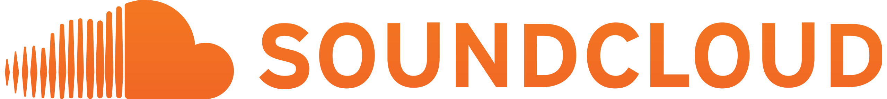

Moj Porfolio
V zadnjem letu sem se poglobil v svet spletnega programiranja in pridobil obsežno znanje ter spretnosti na tem področju. Moje delo vključuje razvoj dinamičnih spletnih aplikacij, oblikovanje uporabniških vmesnikov in upravljanje s podatkovnimi bazami. S poznavanjem sodobnih tehnologij, kot so HTML, CSS, JavaScript in različni ogrodji, sem bil sposoben ustvariti funkcionalne in privlačne spletne rešitve. Skozi projektne naloge sem se naučil reševati kompleksne izzive, ki jih prinaša razvoj spletnih aplikacij, in izpopolnil svoje sposobnosti v timskem delu ter uporabi najnovejših orodij za razvoj. Moje delo vključuje tudi raziskovanje in implementacijo najboljših praks v industriji, kar mi omogoča ustvarjanje visoko kakovostnih in učinkovitih spletnih rešitev.

